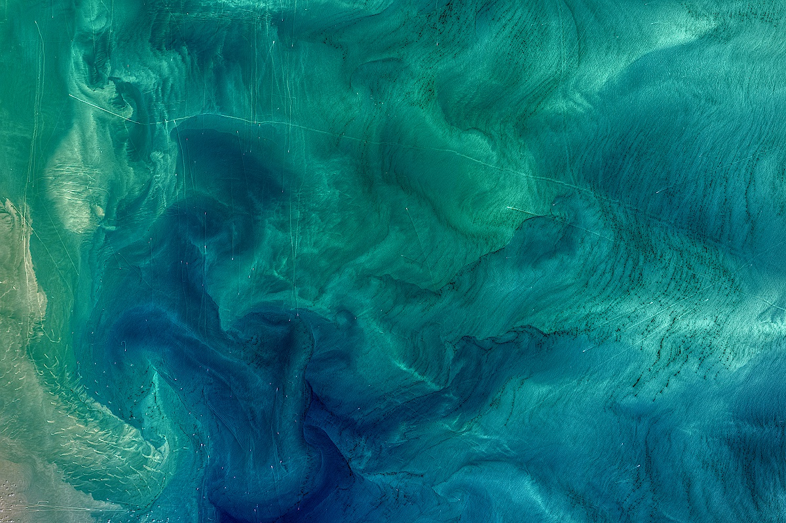

Imagine you visit a landlocked region where none of the inhabitants have ever been to the ocean. Although they may not be aware of it, every single day these people breathe oxygen generated by marine photosynthesis, benefit from the lowered atmospheric carbon dioxide (CO2) levels induced by marine phytoplankton, and consume food that was fueled by marine ecosystems. In essence, the ocean can be viewed as a garden that provides beauty, resources, and CO2 drawdown for society.
Your challenge is to create an accessible platform that visually, sonically, and interactively educates users about important ocean-provided services in a way they can easily understand.